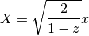
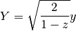
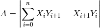
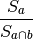

Bases: object
Polygons are represented by both a set of points (in Cartesian (x, y, z) normalized on the unit sphere), and an inside point. The inside point is necessary, because both the inside and outside of the polygon are finite areas on the great sphere, and therefore we need a way of specifying which is which.
| Parameters : | points : An Nx3 array of (x, y, z) triples in vector space
inside : An (x, y, z) triple, optional
|
|---|
Attributes Summary
| inside | Get the inside point of the polygon. |
| points | The points defining the polygon. |
Methods Summary
| area() | Returns the area of the polygon on the unit sphere. |
| contains_arc(a, b) | Returns True if the polygon fully encloses the arc given by a and b. |
| contains_point(point) | Determines if this SphericalPolygon contains a given point. |
| copy() | |
| draw(m, **plot_args) | Draws the polygon in a matplotlib.Basemap axes. |
| from_cone(ra, dec, radius[, degrees, steps]) | Create a new SphericalPolygon from a cone (otherwise known as a “small circle”) defined using (ra, dec, radius). |
| from_radec(ra, dec[, center, degrees]) | Create a new SphericalPolygon from a list of (ra, dec) points. |
| from_wcs(fitspath[, steps, crval]) | Create a new SphericalPolygon from the footprint of a FITS WCS specification. |
| intersection(other) | Return a new SphericalPolygon that is the intersection of self and other. |
| intersects_arc(a, b) | Determines if this SphericalPolygon intersects or contains the given arc. |
| intersects_poly(other) | Determines if this SphericalPolygon intersects another SphericalPolygon. |
| multi_intersection(polygons[, method]) | Return a new SphericalPolygon that is the intersection of all of the polygons in polygons. |
| multi_union(polygons) | Return a new SphericalPolygon that is the union of all of the polygons in polygons. |
| overlap(other) | Returns the fraction of self that is overlapped by other. |
| same_points_as(other[, do_sort, thres]) | Determines if this SphericalPolygon points are the same as the other. |
| to_radec() | Convert SphericalPolygon footprint to RA and DEC. |
| union(other) | Return a new SphericalPolygon that is the union of self and other. |
Attributes Documentation
Get the inside point of the polygon.
The points defining the polygon. It is an Nx3 array of (x, y, z) vectors. The polygon will be explicitly closed, i.e., the first and last points are the same.
Methods Documentation
Returns the area of the polygon on the unit sphere.
The algorithm is not able to compute the area of polygons that are larger than half of the sphere. Therefore, the area will always be less than 2π.
The area is computed by transforming the polygon to two dimensions using the Lambert azimuthal equal-area projection


The individual great arc circle segments are interpolated before doing the transformation so that the curves are not straightened in the process.
It then uses a standard 2D algorithm to compute the area.

Determines if this SphericalPolygon contains a given point.
| Parameters : | point : an (x, y, z) triple
|
|---|---|
| Returns : | contains : bool
|
Draws the polygon in a matplotlib.Basemap axes.
| Parameters : | m : Basemap axes object **plot_args : Any plot arguments to pass to basemap |
|---|
Create a new SphericalPolygon from a cone (otherwise known as a “small circle”) defined using (ra, dec, radius).
The cone is not represented as an ideal circle on the sphere, but as a series of great circle arcs. The resolution of this conversion can be controlled using the steps parameter.
| Parameters : | ra, dec : float scalars
radius : float scalar
degrees : bool, optional
steps : int, optional
|
|---|---|
| Returns : | polygon : SphericalPolygon object |
Create a new SphericalPolygon from a list of (ra, dec) points.
| Parameters : | ra, dec : 1-D arrays of the same length
center : (ra, dec) pair, optional
degrees : bool, optional
|
|---|---|
| Returns : | polygon : SphericalPolygon object |
Create a new SphericalPolygon from the footprint of a FITS WCS specification.
This method requires having astropy installed.
| Parameters : | fitspath : path to a FITS file, astropy.io.fits.Header, or astropy.wcs.WCS
steps : int, optional
|
|---|---|
| Returns : | polygon : SphericalPolygon object |
Return a new SphericalPolygon that is the intersection of self and other.
If the intersection is empty, a SphericalPolygon with zero points will be returned.
If the result is disjoint, the pieces will be connected using cut lines. For example:
: o---------o
: | |
: o---------o=====o----------o
: | |
: o----------o
| Parameters : | other : SphericalPolygon |
|---|---|
| Returns : | polygon : SphericalPolygon object |
Notes
For implementation details, see the graph module.
Determines if this SphericalPolygon intersects or contains the given arc.
Determines if this SphericalPolygon intersects another SphericalPolygon.
This method is much faster than actually computing the intersection region between two polygons.
| Parameters : | other : SphericalPolygon |
|---|---|
| Returns : | intersects : bool
|
Notes
The algorithm proceeds as follows:
Determine if any single point of one polygon is contained within the other.
Deal with the case where only the edges overlap as in:
: o---------o : o----+---------+----o : | | | | : o----+---------+----o : o---------oIn this case, an edge from one polygon must cross an edge from the other polygon.
Return a new SphericalPolygon that is the intersection of all of the polygons in polygons.
| Parameters : | polygons : sequence of SphericalPolygon method : ‘parallel’ or ‘serial’, optional
|
|---|---|
| Returns : | polygon : SphericalPolygon object |
Return a new SphericalPolygon that is the union of all of the polygons in polygons.
| Parameters : | polygons : sequence of SphericalPolygon |
|---|---|
| Returns : | polygon : SphericalPolygon object |
See also
Returns the fraction of self that is overlapped by other.
Let self be a and other be b, then the overlap is defined as:

| Parameters : | other : SphericalPolygon |
|---|---|
| Returns : | frac : float
|
Determines if this SphericalPolygon points are the same as the other. Number of points and areas are also compared.
When do_sort is True, even when self and other have same points, they might not be equivalent because the order of the points defines the polygon.
| Parameters : | other : SphericalPolygon do_sort : bool
thres : float
|
|---|---|
| Returns : | is_eq : bool |
Convert SphericalPolygon footprint to RA and DEC.
| Returns : | ra, dec : list of float
|
|---|
Return a new SphericalPolygon that is the union of self and other.
If the polygons are disjoint, they result will be connected using cut lines. For example:
: o---------o
: | |
: o---------o=====o----------o
: | |
: o----------o
| Parameters : | other : SphericalPolygon |
|---|---|
| Returns : | polygon : SphericalPolygon object |
See also
Notes
For implementation details, see the graph module.